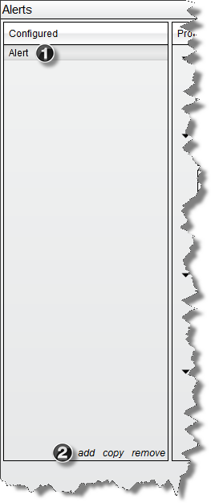
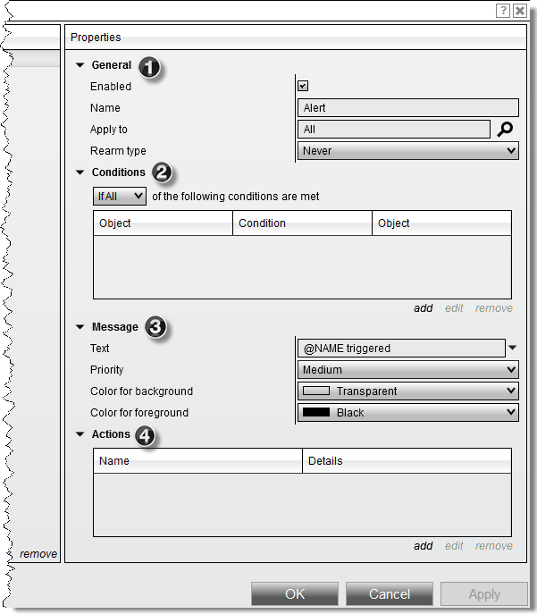

|
<< Click to Display Table of Contents >> Alerts Dialog |


|
Alerts Dialog
|
<< Click to Display Table of Contents >> Alerts Dialog |
|
The Alerts Dialog will list any alerts that are currently configured for the window the dialog was launched from as well as allow you to configure any running alerts. Alerts run on a per tab basis for each window. This means if you have two charts open in your workspace, the alerts dialog will only list alerts running from that specific tab.
Accessing Alerts from the Market Analyzer•Right click on a Market Analyzer •Select Alerts
An Alert Dialog launched from the Market Analyzer will list any columns you have configured on your Market Analyzer to be used as alert condition objects.
Accessing Alerts from a Chart•Right click on a Chart •Select Alerts
An Alert Dialog launched from the Chart will list any chart objects (data series, indicators, drawing tools) you have configured on your Chart to be used as alert condition objects. |
 Understanding the alerts dialog
Understanding the alerts dialog
The Alerts Dialog will list any configured alerts for the current tab as well as allow you to configure the alerts listed. Configure Panel1. List of any configured alerts 2. Menu to add, remove or copy alerts
 Properties PanelThe properties panel will allow you to define and modify each configured alert. For information specific to customizing an alert property, please see our help guide article on Configuring Alerts
 |